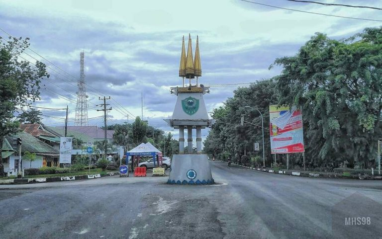
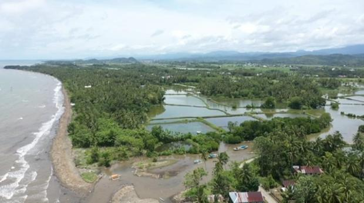

Sejarah

Kabupaten Barru terletak di Provinsi Sulawesi Selatan. Secara historis, Barru memiliki akar budaya yang kuat dari suku Bugis, salah satu kelompok etnis terbesar di Sulawesi Selatan. Nama "Barru" berasal dari kata dalam bahasa
Bugis yang berarti "baru," yang melambangkan semangat pembaruan dan kemajuan masyarakatnya.
Daerah ini memiliki jejak sejarah sebagai bagian dari kerajaan Bugis yang memainkan peran penting dalam perdagangan, budaya, dan politik di kawasan Sulawesi. Hingga kini, pengaruh adat Bugis masih terlihat jelas dalam tradisi,
bahasa, dan kehidupan sehari-hari masyarakatnya.
Geografis

Secara geografis, Kabupaten Barru terletak di pesisir barat Sulawesi Selatan dengan luas sekitar 1.174 km². Wilayah ini memiliki topografi yang beragam, dari dataran rendah di pesisir hingga perbukitan di pedalaman, serta
berbatasan dengan Kabupaten Parepare di utara, Pangkep di selatan, Soppeng di timur, dan Selat Makassar di barat.
Posisi strategisnya sebagai penghubung jalur lintas barat Sulawesi menjadikannya daerah yang penting secara ekonomi dan transportasi. Letaknya yang diapit oleh gunung dan laut memberikan keindahan alam yang khas.
Wisata
Kabupaten Barru memiliki potensi wisata alam dan budaya yang menarik, seperti:.
Pantai Ujung Batu

Pantai ini terkenal dengan pasir putihnya dan pemandangan sunset yang memukau, menjadi tempat favorit untuk bersantai dan menikmati keindahan laut.
Pulau Dutungan

Sebuah pulau kecil dengan panorama eksotis dan terumbu karang yang memikat, cocok untuk snorkeling dan diving.